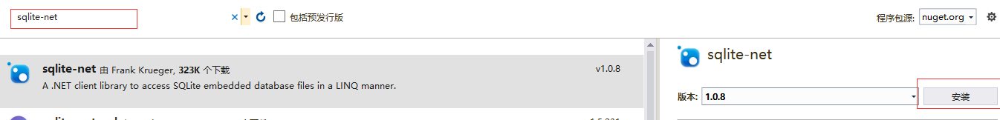
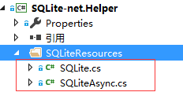
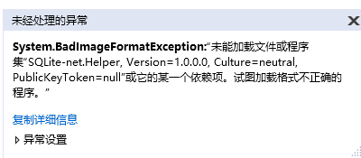
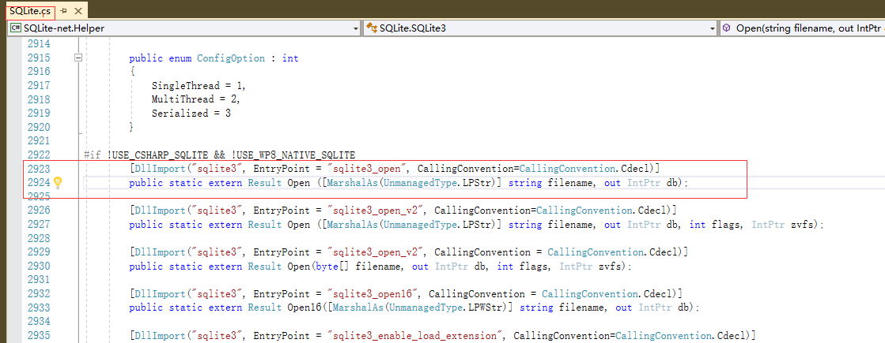
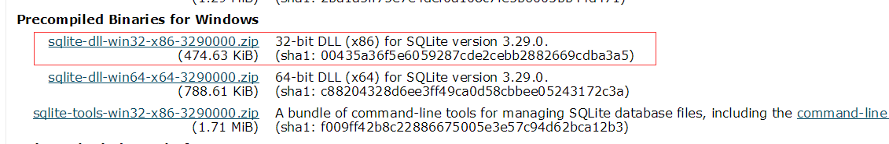
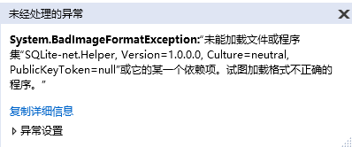
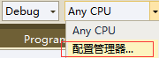
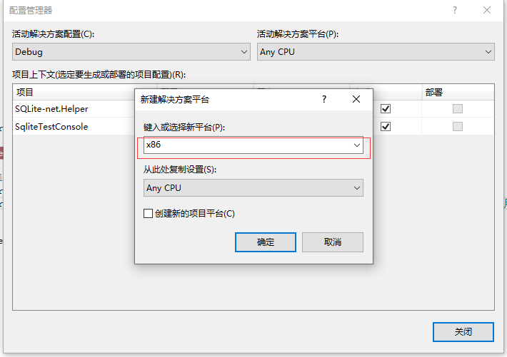
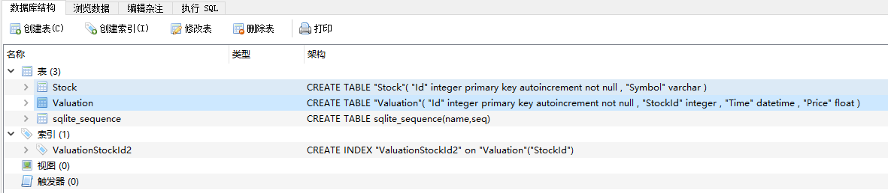

原文连接:https://www.cnblogs.com/kiba/p/11149685.html
SQLite简易版ORM
首先打开项目，使用nuget搜索sqlite-net,如下图：

下载完成后，我们会多出两个文件，SQLite.cs和SQLiteAsync.cs。
我们新建一个文件夹SQLiteResources，把这俩文件放进去。

然后我们创建两个表实体，如下：
public class Valuation
{
[PrimaryKey, AutoIncrement]
public int Id { get; set; }
[Indexed("ValuationStockId2",1)] //索引，注意，该索引在表创建时，会创建，如果索引改名，旧索引依然存在，并未被删除
public int StockId { get; set; }
public DateTime Time { get; set; }
public decimal Price { get; set; }
}
public class Stock
{
[PrimaryKey, AutoIncrement]
public int Id { get; set; }
public string Symbol { get; set; }
}接下来我们创建一个SQLiteHelper，用来管理Sqlite数据库，如下：
public class SQLiteHelper
{
public string connstr = Path.Combine(Environment.CurrentDirectory, "User.db");//没有数据库会创建数据库
public SQLiteConnection db;
public SQLiteHelper()
{
db = new SQLiteConnection(connstr);
db.CreateTable<Stock>();//表已存在不会重复创建
db.CreateTable<Valuation>();
}
public int Add<T>(T model)
{
return db.Insert(model);
}
public int Update<T>(T model)
{
return db.Update(model);
}
public int Delete<T>(T model)
{
return db.Update(model);
}
public List<T> Query<T>(string sql) where T : new()
{
return db.Query<T>(sql);
}
public int Execute(string sql)
{
return db.Execute(sql);
}
}
到此，我们的简易版ORM就搭建好了，下面让我们一起试用下这个ORM。
首先我们添加一个项目，SqliteTestConsole。
然后在Main函数中写上测试代码如下：
static void Main(string[] args)
{
SQLiteHelper sqliteHelper = new SQLiteHelper();
var list = sqliteHelper.Query<Stock>("select * from Stock");
sqliteHelper.Add(new Valuation() { Price = 100, StockId = 1, Time = DateTime.Now });
var list2 = sqliteHelper.Query<Valuation>("select * from Valuation");
var list3 = sqliteHelper.Query<Valuation>("select * from Valuation INDEXED BY ValuationStockId2 WHERE StockId > 2");//使用索引ValuationStockId2查询
try
{
sqliteHelper.Execute("drop index ValuationStockId");//删除索引，因为该索引已被删除，所以抛异常
}
catch (Exception ex)
{
}
}然后运行调试，会抛出异常如下：

那么我们到底缺少什么依赖文件呢？
打开SQLite.cs文件，我们会发现如下代码：

如上图所示，我们缺少了依赖dll—sqlite3.dll。
下面我们打开sqlite的官网寻找并下载依赖动态库【Sqlite官网下载网址】
因为项目使用x86的Framework4.6.1，所以我们要找到对应的sqlite版本。

下载完成后，我们可看到如下文件。
我们把其中的sqlite3.dll移动到项目的输出目录【X盘\SqliteTestConsole\bin\Debug】下面。
然后我们运行项目，项目依然提示错误。

这是因为我们的下载的sqllite3.dll是x86的版本，所以我们要把Any CPU修改为x86，选择【配置管理器】，如下图：


然后我们再运行测试项目就可以正常编译通过了。
现在，我们再使用sqlitebrowser打开我们创建的User.db查看数据。
sqlitebrowser是一个sqlite的开源管理工具，下载地址：https://github.com/sqlitebrowser/sqlitebrowser。

如图所示，我们已经成功创建了表，并完成了插入数据操作。
----------------------------------------------------------------------------------------------------
到此SQLite的简易ORM就已经搭建完成了。
代码已经传到Github上了，欢迎大家下载。
Github地址：https://github.com/kiba518/SQLite_net.Helper
----------------------------------------------------------------------------------------------------
注：此文章为原创，任何形式的转载都请联系作者获得授权并注明出处！
若您觉得这篇文章还不错，请点击下方的【推荐】，非常感谢！